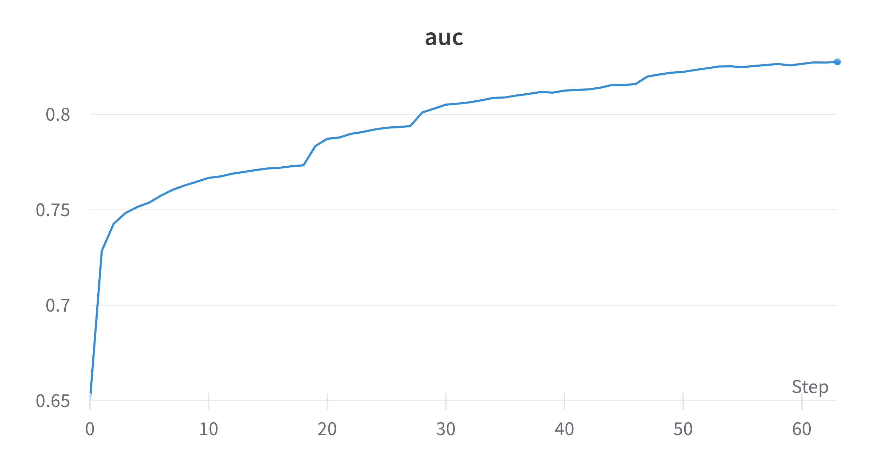
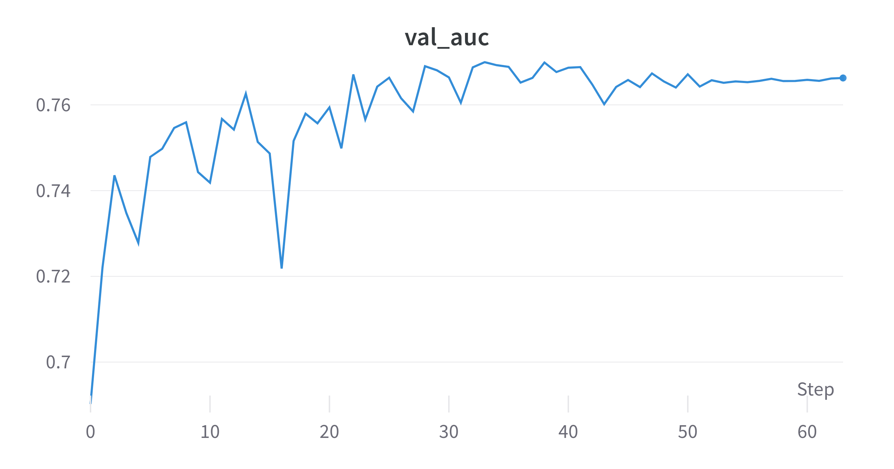
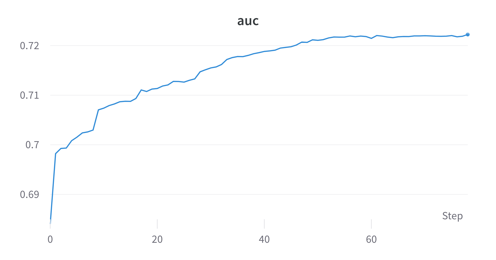

Classical Returns
revealOptions: transition: ‘fade’ transitionSpeed: ‘fast’ width: 1400 —
Some classical Results
EP Train AUC: 0.82 | Test AUC: 0.76
QG Train AUC: 0.72 | Test AUC: 0.70




Tested Two Ansatzes
──H──RZ(M0)──RY(M1)──RZ(M2)─┤ <Z>
- M0, M1, M2 holds the linear combination $b+ \sum_{i=0}^nw_ix_i$.
- 30 trainable parameters for 1 qubit 1 layer with kernel size of (3,3).
──H──RX(M0)──RY(M1)──RZ(M2)──RX(M3)──RY(M4)──RZ(M5)──RX(M6)──RY(M7)──RZ(M8)─┤ <Z>
- $M_i$ holds the linear combination $w_ix_i + b_i$.
-
18 trainable parameters for 1 qubit 1 layer with kernel size of (3,3).
- Tested on ElectronPhoton dataset with 90k train and 10k validation.
Results
Comparison with CCNN for the first ansatz.

Results
Comparison with CCNN for the second ansatz.

Status
Done:
- Trained QCNNHybrid on EP with JAX + Pennylane with different ansatzes.
- Benchmarked the models with CCNN with approx same number of parameters.
Goals for next week:
- Training with more filters and QConv layers might increase AUC.
- Training fully Quantum models.